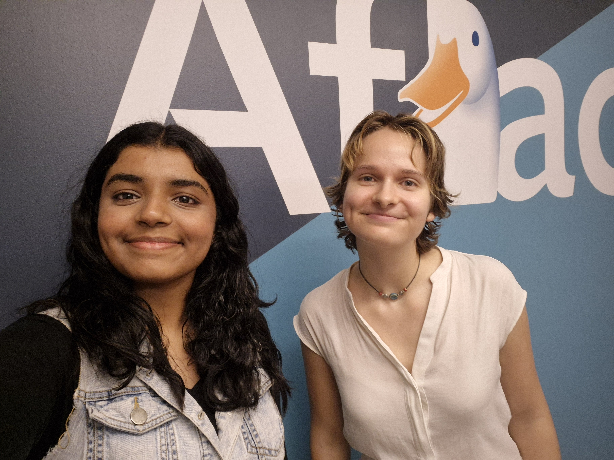
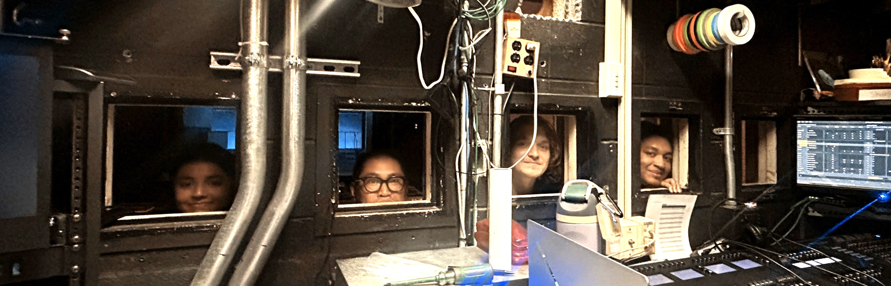

My role as a Sales Intern for Aflac was a truly transformative experience that enhanced my business and communication skills. Working on Wall Street gave me firsthand exposure to a fast-paced corporate environment, where I analyzed market trends, studied product information, and refined my presentation abilities through client interactions. Above all, I’m grateful for the significant mentorship from my managers and the great camaraderie among the intern team.

Becoming a part of NJIT’s Theatre Department has easily been one of the most meaningful experiences of my college career. Starting in my freshman year as a Soundboard Operator, I learned the ins and outs of live technical audio from the ground up. By sophomore year, I expanded my technical knowledge by taking on the role of A2 Audio Assistant , mastering microphone logistics, sound system setups, and real-time audio management for live performances.

Stepping into the role of Director of Philanthropy for Alpha Sigma Tau was a defining experience that perfectly aligned with my passion for community service, event organization, and fundraising. In this position, I lead the planning and execution of chapter-wide philanthropic events and volunteer initiatives. Through coordination and active member engagement, our chapter successfully raised $430 and completed 172 service hours in a single semester.
Participating in an 8-week Corporate Operations Externship gave me a hands-on deep dive into corporate strategy and data analytics. Throughout the program, I worked on business deliverables, analyzed complex operational workflows, and leveraged data-driven insights to propose improvements for company operations.
Becoming a Retail Associate at Burlington has been an extremely valuable and eye-opening experience that reshaped my understanding of dedication and efficiency. As a Selling Floor Associate, I handle customer interactions, resolve floor questions, and maintain visual standards across the store. Navigating a fast-paced retail environment has improved my adaptability and problem-solving skills to consistently deliver a seamless customer experience.